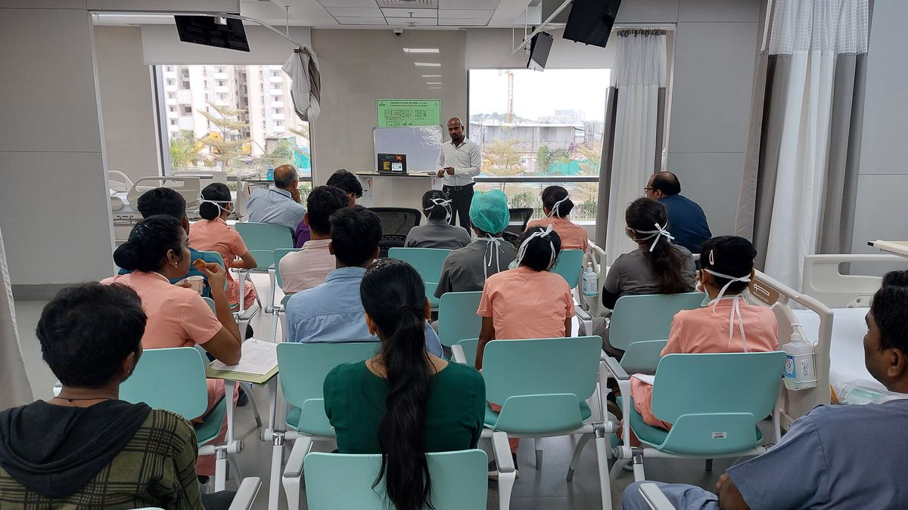
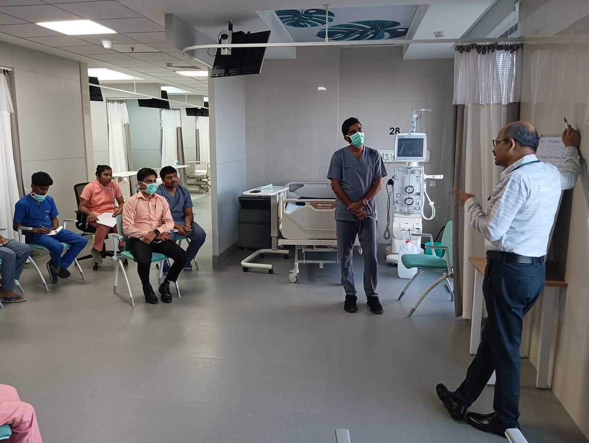
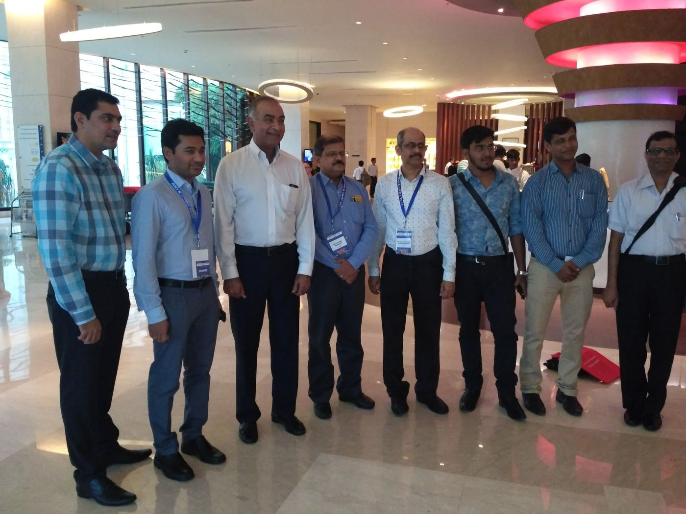
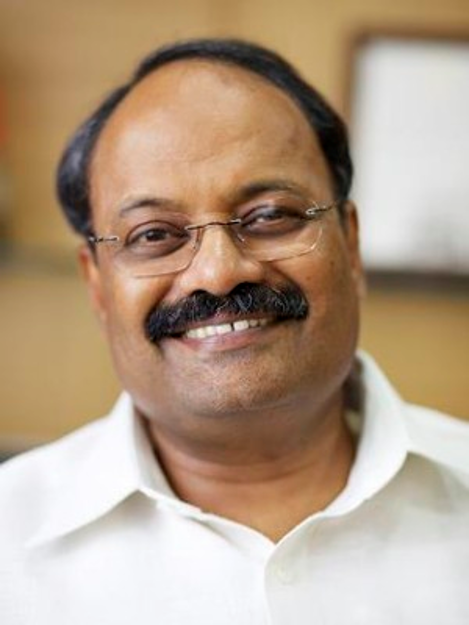
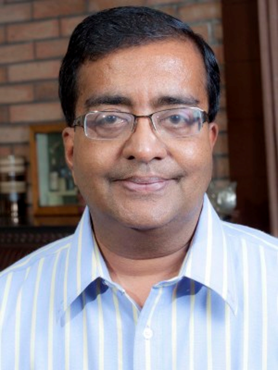

We are a coalition of nephrologists, cardiologists, industry leaders, social entrepreneurs and community volunteers, united by one conviction: kidney disease is preventable, if we act early enough.


Our founder trustees and program staff bring great diversity and unique skill sets — eminent nephrologists, cardiologists, captains of industry, social entrepreneurs, technology champions and community leaders — all leading this initiative together.
We envision a world where no one suffers from kidney disease without care. Through awareness, screening, subsidised treatment and community support, CFYKF brings hope and healing to thousands who can't afford it.
Screening camps and awareness drives help detect kidney issues early.
Subsidised dialysis and treatment support for those in need.
Partnering with communities to build a healthier, stronger tomorrow.

To create a large platform of alliance partners committed to fighting kidney disease and kidney failure — Foundations, NGOs, public and private hospitals, national and state governments, schools, research institutions, policy makers, media, patients and their families, and urban and rural communities — with the common objective of a paradigm shift in awareness, prevention, detection and treatment of kidney disease in India.
To substantially reduce the incidence of kidney disease in India through awareness and prevention, in active partnership with all like-minded parties — and to reduce the kidney disease burden in India by 50% by 2025, moving from reactive to proactive kidney care.
Our end-to-end approach ensures that every individual receives the right care, at the right time.
We go into communities with awareness drives and health education.
Early screening and diagnostics to detect kidney issues early.
Detailed evaluation and guidance for patients and families.
Affordable treatment, dialysis and emotional support for patients.
Continuous follow-up and care for a better quality of life.
Every decision starts with what's best for the patient.
We break barriers so that care is within everyone's reach.
We ensure the highest standards in every service we provide.
We treat every patient with dignity and empathy.
We operate with honesty, accountability, and fairness.
We work with communities to create lasting impact.
We embrace new ideas and technology for better outcomes.
We learn, adapt, and improve every single day.
We build programs that create change for generations.
Founder trustees leading CFYKF with single-minded devotion to the cause of kidney care.

A Chemical Engineering graduate of the Manipal Institute of Technology (1975), Narendra joined Pragati Offset Pvt. Ltd. — the commercial printing press his father Sri Paruchuri Hanumantha Rao founded in 1962 — and led it from tech-follower to tech-leader, winning the SAPPI International Printer of the Year award in 2006, 2008 and 2010. He brings decades of institution-building experience to CFYKF, today ably supported by his brother Mahendra and sons Harsha and Hemanth.
SAPPI Printer of the Year · 2006 · 2008 · 2010Practising Nephrologist since 1997 across Chennai, Mysore and Hyderabad. Keenly focused on community nephrology and prevention, and on Acute Kidney Injury (member, AKI Committee, ISN). Invited faculty at the National Institute of Nutrition and adjunct faculty at JSS University, Mysore, and reviewer for the Indian Journal of Nephrology and Indian Heart Journal, with 42+ publications in journals including Nature, CJASN and Kidney International.
42+ Publications · Nature · CJASN · Kidney International
B.Tech, MBA, with extensive management experience across corporate and social sectors as a Management Consultant and Social Entrepreneur. A two-time kidney transplant recipient himself, he brings a patient's perspective and social-sector experience to the Foundation.
Two-Time Kidney Transplant RecipientYou have two bean-shaped kidneys, about the size of a fist, located on either side of your spine below the rib cage. Their main job is to filter your blood, removing waste and extra water to make urine — they also help control blood pressure and produce hormones your body needs to stay healthy.
Kidney disease — also known as Chronic Kidney Disease (CKD) — occurs when the kidneys can no longer remove waste and extra water from the blood, or perform their other functions properly. Tens of millions of people may have kidney disease, and many more are at risk without knowing it.
Kidney disease is most often caused by diabetes or high blood pressure, which damage the glomeruli — tiny filters inside each kidney — usually slowly, over many years. Cardiovascular disease and family history also raise risk. Other significant risk factors include obesity, habitual use of painkillers, urinary infections and kidney stones — anyone with these should have an annual check-up.
Kidney disease is often called a "silent" disease because most people feel no symptoms in its early stages — you might feel fine until your kidneys have almost stopped working. Reduced urine output, fatigue, nausea, swelling in the feet or face, poor sleep and appetite, unexplained itchiness and shortness of breath can all be warning signs. Don't wait for symptoms — blood and urine tests are the only reliable way to check kidney function.
Together, we can build a healthier tomorrow.